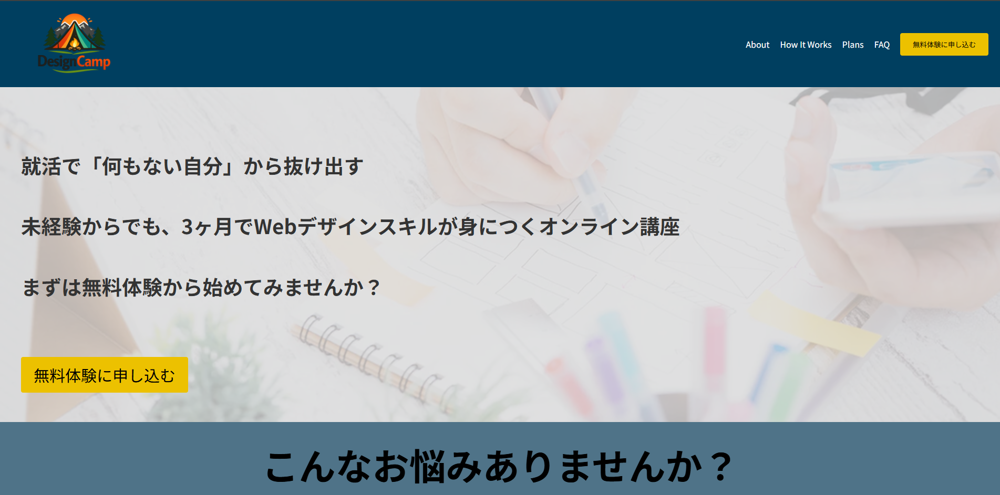

架空のデザインスクールLP
Webデザイン / コーディング


概要
架空のWebデザインスクールのLPを約二週間で制作しました。
仮想クライアントを想定し、要件整理からデザインまで一貫して制作しました。
ターゲットを身近な大学生に設定し、同世代の友人たちに見てもらいながら制作しました。
目的
初心者でも安心して参加できる印象を与え、受講へのハードルを下げることを目的としました。
このLPの最終的な目的は「無料体験に申し込む」コンバーションボタンを押下することです。
ターゲット
Webデザインに興味がある20代の学生
工夫した点
情報が直感的に伝わるようにレイアウトを設計し、視線誘導を意識して構成しました。
配色は爽やかな寒色をメインとしつつ彩度と明度を落とし、落ち着いた印象を与えるデザインにしています。
アクセントカラーであるエネルギッシュな黄色を使う場所を絞り、コンバーションボタンへの誘導を明確にしています。
ヒーローセクションをあえて短めに設計し、次のセクションを少し見せることでスクロールを促しています。
反省点
もう少し鮮やかな配色にして、若い人向けであることを示すべきでした。
レスポンシブ対応を後から実装する形となったため、設計段階からデバイスごとの表示を考慮する重要性を学びました。
また、Figmaとコーディングの連携についても課題を感じたため、今後はより実装を意識した設計ができるよう改善していきたいと考えています。
使用ツール
Figma / HTML / CSS
作品リンク
サイトを見る →ワイヤーフレーム・デザインカンプ
Figmaを使って作成しました。
Figmaを使用するのはこれが初めてでしたが、基本操作の習得も含めて三日間ほどで完成させました。
まだ機能を効率的に使う段階には至っていないので、これから様々な機能を習得していきたいです。